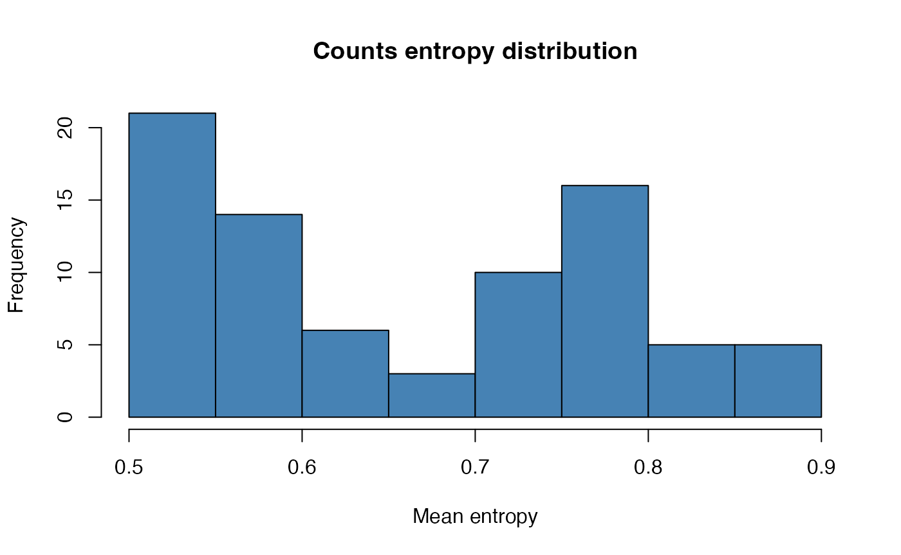
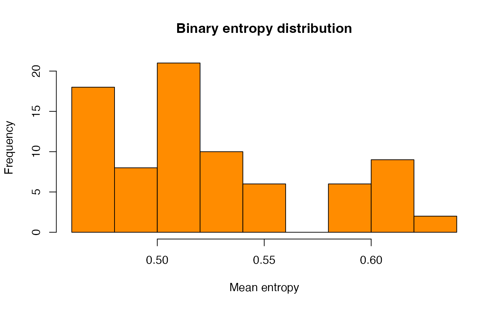
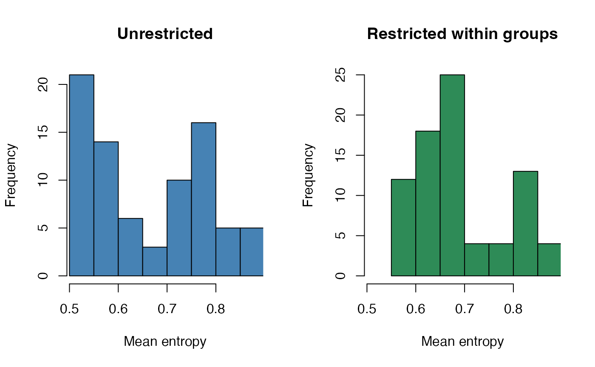

workflow.RmdThis vignette demonstrates a complete example of how to use the
Entropy package to compute entropy values for cells in a
Seurat object.
## Loading required package: SeuratObject## Loading required package: sp## 'SeuratObject' was built under R 4.4.0 but the current version is
## 4.4.1; it is recomended that you reinstall 'SeuratObject' as the ABI
## for R may have changed##
## Attaching package: 'SeuratObject'## The following objects are masked from 'package:base':
##
## intersect, t
data("pbmc_small")
DefaultAssay(pbmc_small) <- "RNA"
result_counts <- run_entropy(
seu = pbmc_small,
assay = "RNA",
neighbors = NULL,
neighbors_method = "auto",
output_path = NULL,
add_assay = TRUE,
mode = "counts"
)## INFO [2026-06-02 16:16:07] Assay 'RNA' found and set as default assay.
## INFO [2026-06-02 16:16:07] Starting entropy estimation for assay: RNA
## INFO [2026-06-02 16:16:07] Assay 'RNA' contains 80 cells and 230 features
## INFO [2026-06-02 16:16:07] Reduction 'pca_RNA' not found. Running PCA on assay 'RNA'.## Warning in irlba(A = t(x = object), nv = npcs, ...): You're computing too large
## a percentage of total singular values, use a standard svd instead.## Warning in irlba(A = t(x = object), nv = npcs, ...): did not converge--results
## might be invalid!; try increasing work or maxit## WARN [2026-06-02 16:16:07] Requested dims up to 20 but 'pca_RNA' has 19. Capping.
## INFO [2026-06-02 16:16:07] No neighbors provided. Computing neighbors using assay 'RNA'.## Computing nearest neighbors## Warning: package 'future' was built under R version 4.4.3## Only one graph name supplied, storing nearest-neighbor graph only## INFO [2026-06-02 16:16:07] Reading the precomputed table (counts mode)## Warning: Data is of class matrix. Coercing to dgCMatrix.## INFO [2026-06-02 16:16:11] Entropy matrix added to Seurat object as 'RNA_entropy'.
## INFO [2026-06-02 16:16:11] Mean entropy added to metadata column 'entropy_mean_RNA'.
result_counts[["RNA_entropy"]]## Assay (v5) data with 230 features for 80 cells
## First 10 features:
## MS4A1, CD79B, CD79A, HLA-DRA, TCL1A, HLA-DQB1, HVCN1, HLA-DMB, LTB,
## LINC00926
## Layers:
## counts
means_counts <- colMeans(GetAssayData(result_counts[["RNA_entropy"]], layer = "counts"))
hist(
means_counts,
main = "Counts entropy distribution",
xlab = "Mean entropy",
col = "steelblue"
)
Binary mode binarizes the count matrix (counts > 0)
and computes Shannon entropy.
result_binary <- run_entropy(
seu = pbmc_small,
assay = "RNA",
neighbors = NULL,
neighbors_method = "auto",
output_path = NULL,
add_assay = FALSE,
mode = "binary"
)## INFO [2026-06-02 16:16:11] Assay 'RNA' found and set as default assay.
## INFO [2026-06-02 16:16:11] Starting entropy estimation for assay: RNA
## INFO [2026-06-02 16:16:11] Assay 'RNA' contains 80 cells and 230 features
## INFO [2026-06-02 16:16:11] Reduction 'pca_RNA' not found. Running PCA on assay 'RNA'.## Warning in irlba(A = t(x = object), nv = npcs, ...): You're computing too large
## a percentage of total singular values, use a standard svd instead.## Warning in irlba(A = t(x = object), nv = npcs, ...): did not converge--results
## might be invalid!; try increasing work or maxit## WARN [2026-06-02 16:16:11] Requested dims up to 20 but 'pca_RNA' has 19. Capping.
## INFO [2026-06-02 16:16:11] No neighbors provided. Computing neighbors using assay 'RNA'.## Computing nearest neighbors## Only one graph name supplied, storing nearest-neighbor graph only## INFO [2026-06-02 16:16:11] Binarizing matrix (counts > 0) for binary entropy.
## INFO [2026-06-02 16:16:11] Reading the binary entropy lookup (binary mode)
head(result_binary)## means
## ATGCCAGAACGACT 0.5175296
## CATGGCCTGTGCAT 0.5561813
## GAACCTGATGAACC 0.5924243
## TGACTGGATTCTCA 0.4901878
## AGTCAGACTGCACA 0.5175296
## TCTGATACACGTGT 0.5175296
hist(
result_binary[[1]],
main = "Binary entropy distribution",
xlab = "Mean entropy",
col = "darkorange"
)
The restrict_by argument restricts each cell’s neighbors
to cells sharing the same value in a metadata column, so entropy is
computed within groups rather than across them. Here we use the
groups column of pbmc_small.
result_restricted <- run_entropy(
seu = pbmc_small,
assay = "RNA",
neighbors_method = "auto",
add_assay = FALSE,
mode = "counts",
restrict_by = "groups"
)## INFO [2026-06-02 16:16:11] Assay 'RNA' found and set as default assay.
## INFO [2026-06-02 16:16:11] Starting entropy estimation for assay: RNA
## INFO [2026-06-02 16:16:11] Assay 'RNA' contains 80 cells and 230 features
## INFO [2026-06-02 16:16:11] Neighbors will be restricted within groups defined by metadata column 'groups'.
## INFO [2026-06-02 16:16:11] Reduction 'pca_RNA' not found. Running PCA on assay 'RNA'.## Warning in irlba(A = t(x = object), nv = npcs, ...): You're computing too large
## a percentage of total singular values, use a standard svd instead.## Warning in irlba(A = t(x = object), nv = npcs, ...): did not converge--results
## might be invalid!; try increasing work or maxit## WARN [2026-06-02 16:16:11] Requested dims up to 20 but 'pca_RNA' has 19. Capping.
## INFO [2026-06-02 16:16:11] No neighbors provided. Computing neighbors using assay 'RNA'.
## INFO [2026-06-02 16:16:11] Recomputing neighbors within each group of 'groups'.
## INFO [2026-06-02 16:16:11] Within-group neighbors: mean 15.0 per cell; 0 cells with 0 neighbors.
## INFO [2026-06-02 16:16:11] Reading the precomputed table (counts mode)
means_restricted <- result_restricted[[1]]
par(mfrow = c(1, 2))
hist(means_counts, main = "Unrestricted", xlab = "Mean entropy",
col = "steelblue", xlim = range(c(means_counts, means_restricted)))
hist(means_restricted, main = "Restricted within groups", xlab = "Mean entropy",
col = "seagreen", xlim = range(c(means_counts, means_restricted)))
Restricting neighbors to within-group cells changes each cell’s
neighborhood composition, which shifts the entropy estimates. On a small
demonstration dataset like pbmc_small the magnitude of the
difference is not biologically meaningful — the purpose here is to show
the effect of the restrict_by argument on the computation,
not to interpret the values.